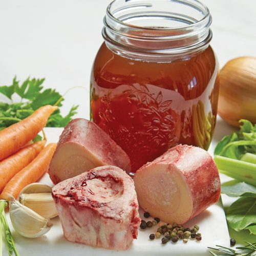

BEEFS

Beef stock
Made in bulk, this stock can be kept in the freezer for up to three months. Remember - brown the bones in the oven first to produce a rich beefy flavour.
Serves: 4
Time to make: 3 hrs 45 mins
Hands-on time: 15 mins
Nutrition Info (per serve)
Calories : 635cal
Kilojoules : 2655kJ
Protein : 43.1g
Total fat : 17.4g
Saturated fat : 4.3g
Carbohydrates : 66.3g
Sugars : 8.8g
Dietary fibre : 13.1g
Sodium : 837mg
Calcium : 319mg
Iron : 5.5mg
Ingredients
800g beef bones (knuckle bones work well)
2 carrots, chopped
2 onions, sliced
2 sticks celery, sliced
3 cloves garlic
4 sprigs fresh thyme spray oil
8 mixed peppercorns
1 teaspoon mustard seeds
2 bay leaves
4 sprigs fresh parsley
Instructions
1. Preheat oven to 200°C. In a baking dish place bones and in another arrange vegetables, garlic and half of the thyme. Spray with oil. Cook both for 35 minutes or until bones are browned and vegetables are golden.
2. In a large pot, place bones and veges with peppercorns, bay leaves and remaining herbs. Cover with water.
3. Bring to the boil and skim off any foam. Reduce heat and simmer for just over two hours, skimming as necessary.
4. Strain into a large bowl, leave to cool and place in fridge to chill.
5. Remove any fat that has formed on the surface. Divide into even portions, label and freeze or chill.